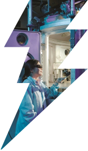

Special events and exhibitions
01.nov-03.nov
Visiting Professor of Aeronautics
It is our pleasure to announce that Prof Sheila Widnall from the Massachusetts Institute of Technology will be delivering 3 lectures on the development of aeronautics and where the future lies in this exciting 'space'.
06.des
Night in the Museum
Get your family together for an exciting night in the museum as you sleep over beside dinosaurs and science displays. Bring your own sleeping bag and get ready to rough it as we go exploring the wonders of science.
10.jan-31.mar
Energetica Exhibition
On loan from the NEMO Science Museum in Amsterdam, the Energetica exhibition is coming to the Community Science Museum.
It's a series of installations that allow visitors to experience the power of the elements as we harness them.
From solar energy powering lighting, to 'Wind Island' that shows how turbines are able to use and control wind to create power.